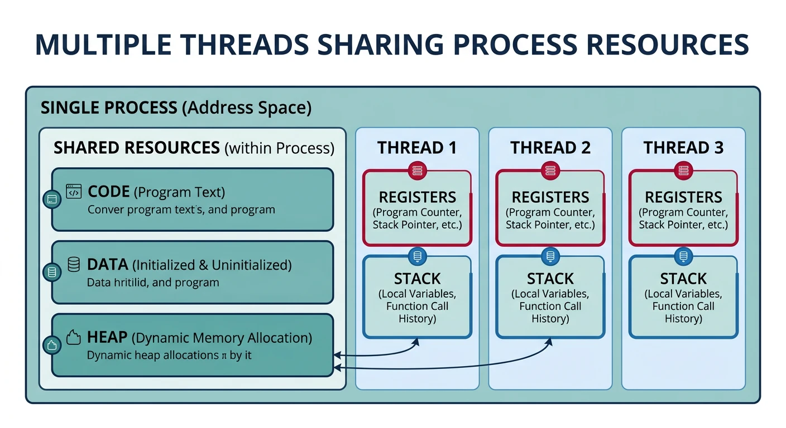
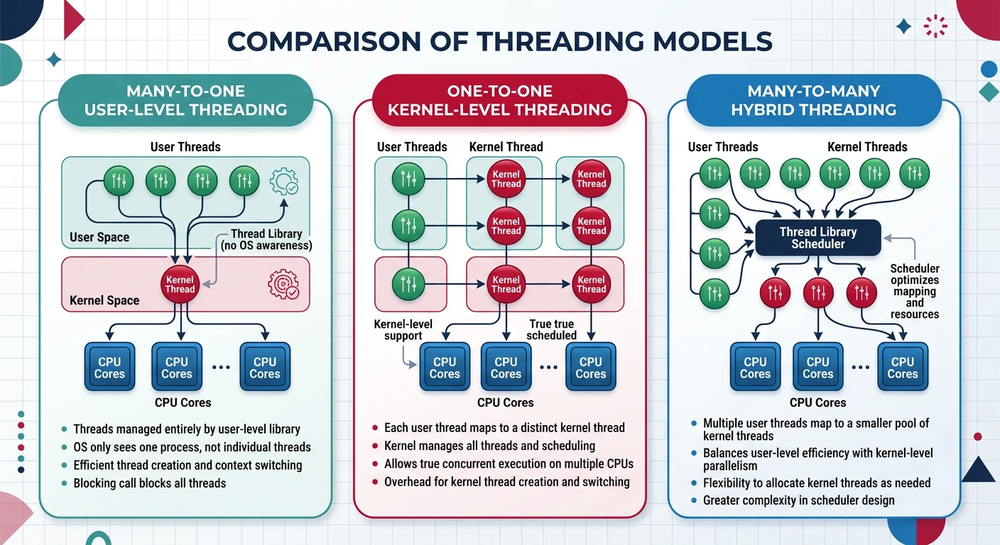
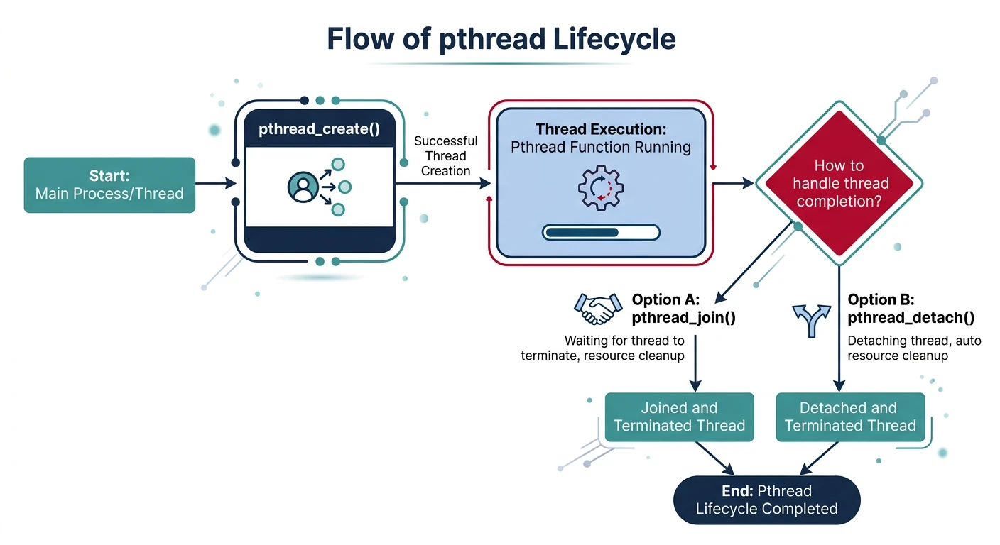
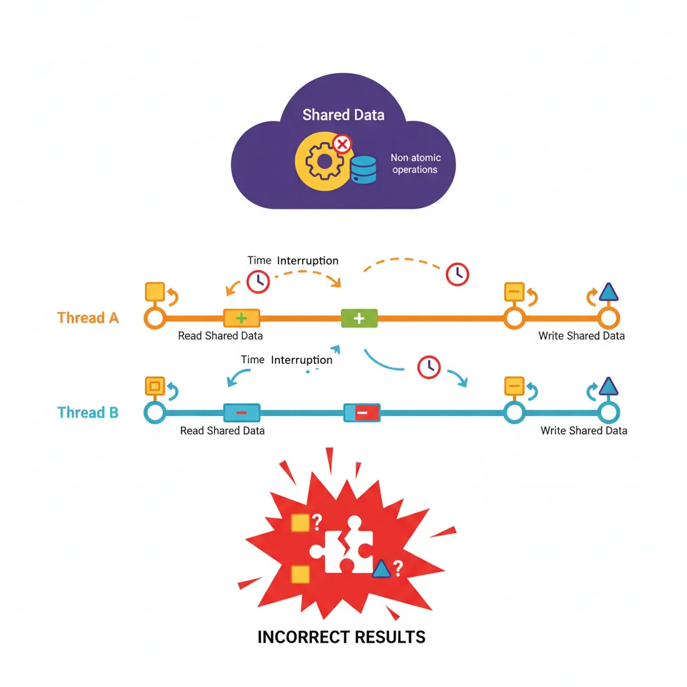
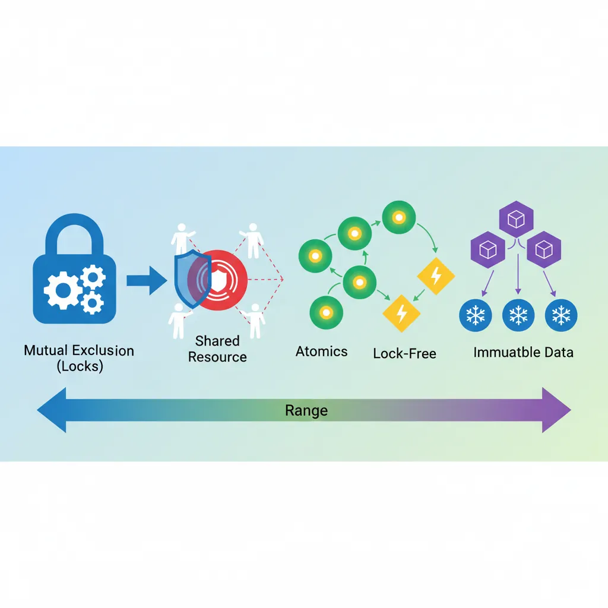

Threads are lightweight units of execution within a process. They enable concurrent programming, allowing applications to perform multiple tasks simultaneously and take full advantage of multi-core processors.

Threads share a process's code, data, and heap segments but each maintains its own stack and register set.
Series Context: This is Part 10 of 24 in the Computer Architecture & Operating Systems Mastery series. Building on process fundamentals, we now explore how multiple threads of execution share process resources.
While processes provide isolation, they're heavyweight—creating a process and switching between them is expensive. Threads are lightweight execution units that share the same address space, enabling efficient parallelism within a single program.
Analogy: If a process is like a house (with its own address, utilities, walls), threads are like roommates sharing that house. They can move around independently but share the same kitchen, bathroom, and living room—efficient but requiring coordination!
Thread Basics
Threads vs Processes
Process vs Thread Comparison
Process vs Thread:
══════════════════════════════════════════════════════════════
PROCESS THREAD
──────────────────────────────── ────────────────────────────────
Own address space Shared address space
Own file descriptors Shared file descriptors
Own signal handlers Shared signal handlers
Own heap Shared heap
Own stack Own stack (each thread)
Own registers/PC Own registers/PC (each thread)
Own thread ID (TID) Own thread ID (TID)
Memory Layout Comparison:
══════════════════════════════════════════════════════════════
SEPARATE PROCESSES: SINGLE PROCESS, MULTIPLE THREADS:
Process A Process B Shared Process Space
┌─────────┐ ┌─────────┐ ┌─────────────────────────┐
│ Stack A │ │ Stack B │ │ Stack (Thread 1) │
├─────────┤ ├─────────┤ ├─────────────────────────┤
│ Heap A │ │ Heap B │ │ Stack (Thread 2) │
├─────────┤ ├─────────┤ ├─────────────────────────┤
│ Data A │ │ Data B │ │ Stack (Thread 3) │
├─────────┤ ├─────────┤ ├═════════════════════════┤
│ Code A │ │ Code B │ │ Heap (SHARED) │
└─────────┘ └─────────┘ ├─────────────────────────┤
│ Data (SHARED) │
Isolated! ├─────────────────────────┤
│ Code (SHARED) │
└─────────────────────────┘
Benefits of Threads
Benefits of Multithreading:
══════════════════════════════════════════════════════════════
1. RESPONSIVENESS
Main thread handles UI, worker threads do computation
→ UI stays responsive during heavy processing
Example: Browser
• Main thread: Render page, handle clicks
• Network thread: Fetch resources
• JavaScript thread: Run scripts
2. RESOURCE SHARING
Threads share memory → Easy communication
• No need for pipes, sockets, or shared memory setup
• Just read/write shared variables (with synchronization!)
3. ECONOMY
┌─────────────────────────────────────────────────────────┐
│ Operation Process Thread │
│ ─────────────────────────────────────────────────────── │
│ Creation time ~10ms ~100μs (100× faster)│
│ Context switch ~5-10μs ~1-2μs (5× faster) │
│ Memory overhead MBs KBs (stack only) │
└─────────────────────────────────────────────────────────┘
4. SCALABILITY
Threads can run on multiple CPU cores simultaneously
→ True parallelism on multicore systems
4-core CPU, 4 threads → 4× speedup (ideal case)
Challenges
Threading is Hard! Shared memory is a double-edged sword:
Race conditions: Results depend on timing
Deadlocks: Threads wait for each other forever
Non-determinism: Bugs may not reproduce
Debugging: Hard to track interleaved execution
Threading Models
There are different ways to implement threads, differing in where thread management happens.

Threading models differ in how user threads map to kernel threads, affecting performance, parallelism, and portability.
User-Level Threads
User-Level Threading
User-Level Threads (N:1 Model):
══════════════════════════════════════════════════════════════
User Space
┌─────────────────────────────────────────────────────────────┐
│ ┌─────────────────────────────────────────────────────┐ │
│ │ Thread Library (e.g., Green Threads) │ │
│ │ ┌─────┐ ┌─────┐ ┌─────┐ ┌─────┐ │ │
│ │ │ T1 │ │ T2 │ │ T3 │ │ T4 │ User threads │ │
│ │ └──┬──┘ └──┬──┘ └──┬──┘ └──┬──┘ │ │
│ │ └────────┴────────┴────────┘ │ │
│ │ │ │ │
│ │ Thread Scheduler │ │
│ │ (in user space) │ │
│ └──────────────────────┬──────────────────────────────┘ │
└─────────────────────────┼───────────────────────────────────┘
══════════════════════════╪═══════════════════════════════════
Kernel Space ▼
┌─────────────────────────────────────────────────────────────┐
│ Single Kernel Thread │
│ (OS sees one "process") │
└─────────────────────────────────────────────────────────────┘
Advantages:
✓ Fast context switch (no kernel involvement)
✓ Can implement custom scheduling
✓ Works on any OS (no kernel support needed)
Disadvantages:
✗ One thread blocks → entire process blocks
✗ Can't use multiple CPUs (all run on one kernel thread)
✗ Page fault in one thread blocks all
Examples: Go goroutines (initially), Java green threads (historical)
Hybrid M:N Model:
══════════════════════════════════════════════════════════════
M user threads mapped to N kernel threads (M > N)
User Space
┌─────────────────────────────────────────────────────────────┐
│ ┌───┐ ┌───┐ ┌───┐ ┌───┐ ┌───┐ ┌───┐ (M user threads) │
│ │UT1│ │UT2│ │UT3│ │UT4│ │UT5│ │UT6│ │
│ └─┬─┘ └─┬─┘ └─┬─┘ └─┬─┘ └─┬─┘ └─┬─┘ │
│ └─────┴──┬──┴─────┴──┬──┴─────┘ │
│ │ │ │
│ User-Level Scheduler │
└─────────────┼───────────┼───────────────────────────────────┘
══════════════╪═══════════╪═══════════════════════════════════
Kernel Space ▼ ▼
┌─────────────────────────────────────────────────────────────┐
│ ┌─────┐ ┌─────┐ │
│ │ KT1 │ │ KT2 │ (N kernel threads) │
│ └─────┘ └─────┘ │
│ │
│ Kernel Scheduler │
└─────────────────────────────────────────────────────────────┘
Examples: Go runtime (goroutines → OS threads), Solaris LWPs
Best of both worlds:
✓ Many lightweight user threads
✓ Multiple kernel threads for parallelism
✓ User-level scheduling is fast
POSIX Threads (pthreads)
pthreads is the standard threading API for Unix-like systems (Linux, macOS, BSD). It provides 1:1 kernel-level threads.

The pthread lifecycle: threads are created with pthread_create, execute concurrently, and synchronize via join or detach.
Thread Creation
Creating Threads with pthreads
// Basic pthread example
#include <stdio.h>
#include <pthread.h>
#include <unistd.h>
// Thread function - runs in new thread
void *thread_function(void *arg) {
int thread_num = *(int *)arg;
printf("Thread %d: Starting\n", thread_num);
sleep(1); // Simulate work
printf("Thread %d: Finishing\n", thread_num);
return NULL;
}
int main() {
pthread_t threads[3];
int thread_args[3] = {1, 2, 3};
// Create 3 threads
for (int i = 0; i < 3; i++) {
int ret = pthread_create(
&threads[i], // Thread ID (output)
NULL, // Attributes (NULL = default)
thread_function, // Function to run
&thread_args[i] // Argument to function
);
if (ret != 0) {
perror("pthread_create failed");
return 1;
}
}
printf("Main: All threads created\n");
// Wait for all threads to complete
for (int i = 0; i < 3; i++) {
pthread_join(threads[i], NULL);
}
printf("Main: All threads finished\n");
return 0;
}
// Compile: gcc -pthread program.c -o program
Output (order may vary!):
Main: All threads created
Thread 1: Starting
Thread 3: Starting
Thread 2: Starting
Thread 2: Finishing
Thread 1: Finishing
Thread 3: Finishing
Main: All threads finished
Joining & Detaching
// Thread joining - wait for completion and get return value
void *compute_sum(void *arg) {
int *result = malloc(sizeof(int));
*result = 42; // Computed result
return result; // Return pointer (lives on heap!)
}
int main() {
pthread_t thread;
void *retval;
pthread_create(&thread, NULL, compute_sum, NULL);
// Join: block until thread finishes, get return value
pthread_join(thread, &retval);
int *result = (int *)retval;
printf("Thread returned: %d\n", *result); // 42
free(result);
return 0;
}
// Detached threads - run independently, can't be joined
void start_background_task() {
pthread_t thread;
pthread_create(&thread, NULL, background_work, NULL);
// Detach: thread resources freed automatically on exit
pthread_detach(thread);
// Can't join a detached thread!
}
// Or set detached at creation:
pthread_attr_t attr;
pthread_attr_init(&attr);
pthread_attr_setdetachstate(&attr, PTHREAD_CREATE_DETACHED);
pthread_create(&thread, &attr, func, NULL);
Thread Attributes
Common Thread Attributes:
Stack size: Default ~8MB, can be reduced for many threads
A race condition occurs when the behavior of a program depends on the relative timing of events (like thread scheduling). The result is non-deterministic and often buggy.

Race conditions occur when threads interleave non-atomic operations on shared data, producing incorrect results.
Critical Sections
Race Condition Example
// BUGGY CODE - Race condition!
int counter = 0; // Shared variable
void *increment(void *arg) {
for (int i = 0; i < 1000000; i++) {
counter++; // NOT atomic!
}
return NULL;
}
int main() {
pthread_t t1, t2;
pthread_create(&t1, NULL, increment, NULL);
pthread_create(&t2, NULL, increment, NULL);
pthread_join(t1, NULL);
pthread_join(t2, NULL);
// Expected: 2,000,000
// Actual: Something less (race condition!)
printf("Counter: %d\n", counter);
return 0;
}
Why it's broken:
══════════════════════════════════════════════════════════════
counter++ is NOT atomic! It's actually 3 operations:
Thread 1 Thread 2
───────────────────────── ─────────────────────────
1. LOAD counter (= 5)
2. ADD 1 (= 6) 1. LOAD counter (= 5) ← Same value!
3. STORE counter (= 6) 2. ADD 1 (= 6)
3. STORE counter (= 6)
Both threads read 5, both write 6 → Lost update!
We incremented twice but counter only increased by 1.
Runs:
$ ./program → Counter: 1847293
$ ./program → Counter: 1923847
$ ./program → Counter: 1788234
Different every time! Non-deterministic bug.
Data Races
Data Race Definition:
══════════════════════════════════════════════════════════════
A data race occurs when:
1. Two or more threads access the same memory location
2. At least one access is a write
3. The accesses are not synchronized
Data races lead to undefined behavior in C/C++!
The compiler can assume no data races and optimize accordingly.
Examples of data races:
━━━━━━━━━━━━━━━━━━━━━━━━━━━━━━━━━━━━━━━━━━━━━━━━━━━━━━━━━━━━
int x = 0; // Shared variable
Thread 1: Thread 2: Race?
───────── ───────── ──────
x = 1; y = x; YES - write/read without sync
x = 1; x = 2; YES - write/write without sync
y = x; z = x; NO - both reads, no writes
CRITICAL SECTION:
A code region that accesses shared resources and must not be
executed by more than one thread at a time.
Atomicity
// Solution 1: Atomic operations (simple cases)
#include <stdatomic.h>
atomic_int counter = 0; // Atomic integer
void *increment(void *arg) {
for (int i = 0; i < 1000000; i++) {
atomic_fetch_add(&counter, 1); // Atomic increment
// Or: counter++; // Also atomic for atomic_int!
}
return NULL;
}
// Now counter will always be exactly 2,000,000!
// Solution 2: Mutex (for complex critical sections)
#include <pthread.h>
int counter = 0;
pthread_mutex_t lock = PTHREAD_MUTEX_INITIALIZER;
void *increment(void *arg) {
for (int i = 0; i < 1000000; i++) {
pthread_mutex_lock(&lock); // Enter critical section
counter++; // Safe!
pthread_mutex_unlock(&lock); // Exit critical section
}
return NULL;
}
Thread Safety Patterns
A function or class is thread-safe if it can be safely called from multiple threads simultaneously.

Thread safety techniques range from mutual exclusion (locks) to lock-free approaches like atomics and immutability.
Thread Safety Techniques
Technique
Description
Example
Immutability
Data never changes after creation
const strings, config objects
Thread-Local Storage
Each thread has its own copy
__thread int x;
Mutual Exclusion
Locks protect shared data
Mutexes, spinlocks
Atomic Operations
Hardware-supported indivisible ops
atomic_int, CAS
Message Passing
Communicate by sending messages
Go channels, queues
// Thread-Local Storage example
#include <pthread.h>
#include <stdio.h>
// Each thread gets its own 'counter'
__thread int counter = 0; // GCC extension
// Or: _Thread_local int counter = 0; // C11 standard
void *thread_func(void *arg) {
int id = *(int *)arg;
for (int i = 0; i < 5; i++) {
counter++; // Each thread increments its OWN copy
printf("Thread %d: counter = %d\n", id, counter);
}
return NULL;
}
// Output: Each thread counts 1,2,3,4,5 independently!
Design Principle: "Share nothing if possible." If you can avoid sharing state between threads, you avoid race conditions entirely. When sharing is necessary, minimize it and protect it carefully.
Conclusion & Next Steps
Threads enable parallelism within a process, but shared memory requires careful synchronization. Key takeaways:
Threads vs Processes: Threads share address space (fast but dangerous), processes are isolated (safe but slower)
Threading Models: User-level (N:1), kernel-level (1:1), and hybrid (M:N) each have trade-offs
pthreads: Standard API for thread creation, joining, and attributes
Race Conditions: Non-atomic operations on shared data cause unpredictable bugs
Thread Safety: Achieved through locks, atomics, immutability, or thread-local storage
Golden Rule: If multiple threads access the same data and at least one writes, you MUST synchronize. The next part covers synchronization primitives in detail.
Continue the Computer Architecture & OS Series
Part 9: Processes & Program Execution
Process lifecycle, PCB, fork/exec, and process states.